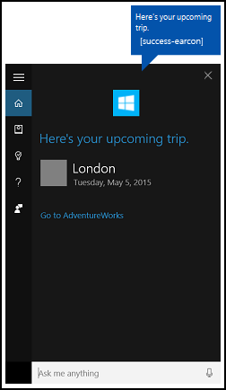
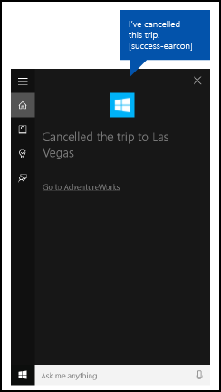
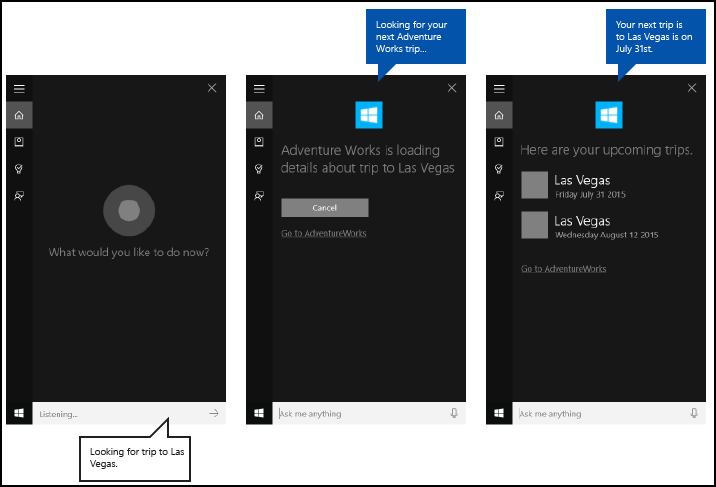

Deep link from a background app in Cortana to a foreground app
Warning
This feature is no longer supported as of the Windows 10 May 2020 Update (version 2004, codename "20H1").
Provide deep links from a background app in Cortana that launch the app to the foreground in a specific state or context.
Note
Both Cortana and the background app service are terminated when the foreground app is launched.
A deep link is displayed by default on the Cortana completion screen as shown here ("Go to AdventureWorks"), but you can display deep links on various other screens.

Overview
Users can access your app through Cortana by:
- Activating it as a foreground app (see Activate a foreground app with voice commands through Cortana).
- Exposing specific functionality as a background app service (see Activate a background app in Cortana using voice commands).
- Deep linking to specific pages, content, and state or context.
We discuss deep linking here.
Deep linking is useful when Cortana and your app service act as a gateway to your full-featured app (instead of requiring the user to launch the app through the Start menu), or for providing access to richer detail and functionality within your app that is not possible through Cortana. Deep linking is another way to increase usability and promote your app.
There are three ways to provide deep links:
- A "Go to <app>" link on various Cortana screens.
- A link embedded in a content tile on various Cortana screens.
- Programmatically launching the foreground app from the background app service.
"Go to <app>" deep link
Cortana displays a "Go to <app>" deep link below the content card on most screens.

You can provide a launch argument for this link that opens your app in similar context as the app service. If you don't provide a launch argument, the app is launched to the main screen.
In this example from AdventureWorksVoiceCommandService.cs of the AdventureWorks sample, we pass the specified destination (destination) string to the SendCompletionMessageForDestination method, which retrieves all matching trips and provides a deep link to the app.
First, we create a VoiceCommandUserMessage (userMessage) that is spoken by Cortana and shown on the Cortana canvas. A VoiceCommandContentTile list object is then created for displaying the collection of result cards on the canvas.
These two objects are then passed to the CreateResponse method of the VoiceCommandResponse object (response). We then set the AppLaunchArgument property value of the response object to the value of destination passed to this function. When a user taps a content tile on the Cortana canvas, the parameter values are passed to the app through the response object.
Finally, we call the ReportSuccessAsync method of the VoiceCommandServiceConnection.
/// <summary>
/// Show details for a single trip, if the trip can be found.
/// This demonstrates a simple response flow in Cortana.
/// </summary>
/// <param name="destination">The destination specified in the voice command.</param>
private async Task SendCompletionMessageForDestination(string destination)
{
...
IEnumerable<Model.Trip> trips = store.Trips.Where(p => p.Destination == destination);
var userMessage = new VoiceCommandUserMessage();
var destinationsContentTiles = new List<VoiceCommandContentTile>();
...
var response = VoiceCommandResponse.CreateResponse(userMessage, destinationsContentTiles);
if (trips.Count() > 0)
{
response.AppLaunchArgument = destination;
}
await voiceServiceConnection.ReportSuccessAsync(response);
}
Content tile deep link
You can add deep links to content cards on various Cortana screens.

Like the "Go to <app>" links, you can provide a launch argument to open your app with similar context as the app service. If you don't provide a launch argument, the content tile does not link to your app.
In this example from AdventureWorksVoiceCommandService.cs of the AdventureWorks sample, we pass the specified destination to the SendCompletionMessageForDestination method, which retrieves all matching trips and provides content cards with deep links to the app.
First, we create a VoiceCommandUserMessage (userMessage) that is spoken by Cortana and shown on the Cortana canvas. A VoiceCommandContentTile list object is then created for displaying the collection of result cards on the canvas.
These two objects are then passed to the CreateResponse method of the VoiceCommandResponse object (response). We then set the AppLaunchArgument property value to the value of the destination in the voice command.
Finally, we call the ReportSuccessAsync method of the VoiceCommandServiceConnection. Here, we add two content tiles with different AppLaunchArgument parameter values to a VoiceCommandContentTile list used in the ReportSuccessAsync call of the VoiceCommandServiceConnection object.
/// <summary>
/// Show details for a single trip, if the trip can be found.
/// This demonstrates a simple response flow in Cortana.
/// </summary>
/// <param name="destination">The destination specified in the voice command.</param>
private async Task SendCompletionMessageForDestination(string destination)
{
// If this operation is expected to take longer than 0.5 seconds, the task must
// supply a progress response to Cortana before starting the operation, and
// updates must be provided at least every 5 seconds.
string loadingTripToDestination = string.Format(
cortanaResourceMap.GetValue("LoadingTripToDestination", cortanaContext).ValueAsString,
destination);
await ShowProgressScreen(loadingTripToDestination);
Model.TripStore store = new Model.TripStore();
await store.LoadTrips();
// Query for the specified trip.
// The destination should be in the phrase list. However, there might be
// multiple trips to the destination. We pick the first.
IEnumerable<Model.Trip> trips = store.Trips.Where(p => p.Destination == destination);
var userMessage = new VoiceCommandUserMessage();
var destinationsContentTiles = new List<VoiceCommandContentTile>();
if (trips.Count() == 0)
{
string foundNoTripToDestination = string.Format(
cortanaResourceMap.GetValue("FoundNoTripToDestination", cortanaContext).ValueAsString,
destination);
userMessage.DisplayMessage = foundNoTripToDestination;
userMessage.SpokenMessage = foundNoTripToDestination;
}
else
{
// Set plural or singular title.
string message = "";
if (trips.Count() > 1)
{
message = cortanaResourceMap.GetValue("PluralUpcomingTrips", cortanaContext).ValueAsString;
}
else
{
message = cortanaResourceMap.GetValue("SingularUpcomingTrip", cortanaContext).ValueAsString;
}
userMessage.DisplayMessage = message;
userMessage.SpokenMessage = message;
// Define a tile for each destination.
foreach (Model.Trip trip in trips)
{
int i = 1;
var destinationTile = new VoiceCommandContentTile();
destinationTile.ContentTileType = VoiceCommandContentTileType.TitleWith68x68IconAndText;
destinationTile.Image = await StorageFile.GetFileFromApplicationUriAsync(new Uri("ms-appx:///AdventureWorks.VoiceCommands/Images/GreyTile.png"));
destinationTile.AppLaunchArgument = trip.Destination;
destinationTile.Title = trip.Destination;
if (trip.StartDate != null)
{
destinationTile.TextLine1 = trip.StartDate.Value.ToString(dateFormatInfo.LongDatePattern);
}
else
{
destinationTile.TextLine1 = trip.Destination + " " + i;
}
destinationsContentTiles.Add(destinationTile);
i++;
}
}
var response = VoiceCommandResponse.CreateResponse(userMessage, destinationsContentTiles);
if (trips.Count() > 0)
{
response.AppLaunchArgument = destination;
}
await voiceServiceConnection.ReportSuccessAsync(response);
}
Programmatic deep link
You can also programmatically launch your app with a launch argument to open your app with similar context as the app service. If you don't provide a launch argument, the app is launched to the main screen.
Here, we add an AppLaunchArgument parameter with a value of "Las Vegas" to a VoiceCommandResponse object used in the RequestAppLaunchAsync call of the VoiceCommandServiceConnection object.
var userMessage = new VoiceCommandUserMessage();
userMessage.DisplayMessage = "Here are your trips.";
userMessage.SpokenMessage =
"You have one trip to Vegas coming up.";
response = VoiceCommandResponse.CreateResponse(userMessage);
response.AppLaunchArgument = "Las Vegas";
await VoiceCommandServiceConnection.RequestAppLaunchAsync(response);
App manifest
To enable deep linking to your app, you must declare the windows.personalAssistantLaunch extension in the Package.appxmanifest file of your app project.
Here, we declare the windows.personalAssistantLaunch extension for the Adventure Works app.
<Extensions>
<uap:Extension Category="windows.appService"
EntryPoint="AdventureWorks.VoiceCommands.AdventureWorksVoiceCommandService">
<uap:AppService Name="AdventureWorksVoiceCommandService"/>
</uap:Extension>
<uap:Extension Category="windows.personalAssistantLaunch"/>
</Extensions>
Protocol contract
Your app is launched to the foreground through Uniform Resource Identifier (URI) activation using a Protocol contract. Your app must override your app's OnActivated event and check for an ActivationKind of Protocol. For more info, see Handle URI activation.
Here, we decode the URI provided by the ProtocolActivatedEventArgs to access the launch argument. For this example, the Uri is set to "windows.personalassistantlaunch:?LaunchContext=Las Vegas".
if (args.Kind == ActivationKind.Protocol)
{
var commandArgs = args as ProtocolActivatedEventArgs;
Windows.Foundation.WwwFormUrlDecoder decoder =
new Windows.Foundation.WwwFormUrlDecoder(commandArgs.Uri.Query);
var destination = decoder.GetFirstValueByName("LaunchContext");
navigationCommand = new ViewModel.TripVoiceCommand(
"protocolLaunch",
"text",
"destination",
destination);
navigationToPageType = typeof(View.TripDetails);
rootFrame.Navigate(navigationToPageType, navigationCommand);
// Ensure the current window is active.
Window.Current.Activate();
}